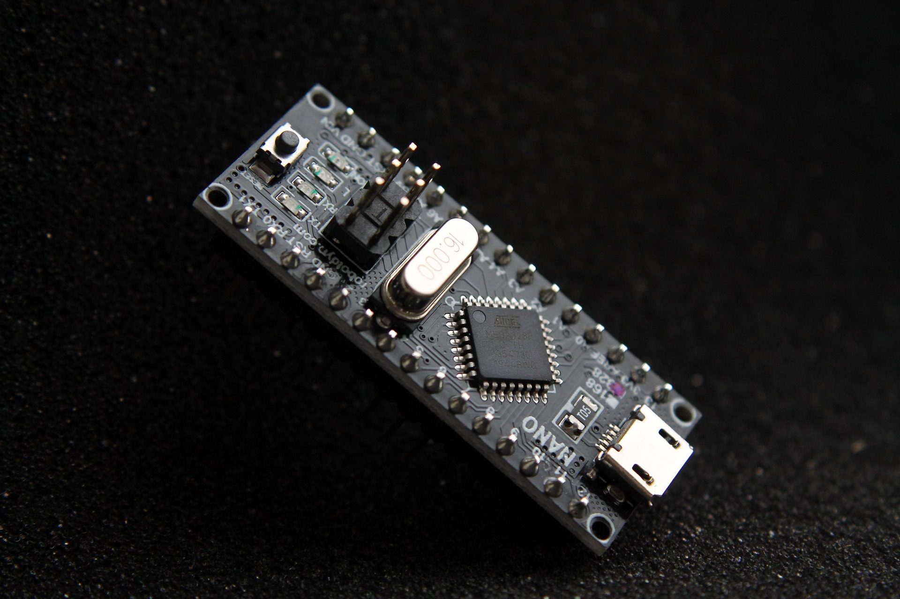
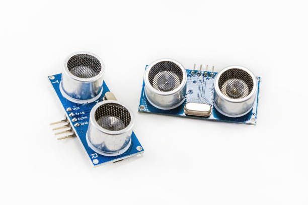
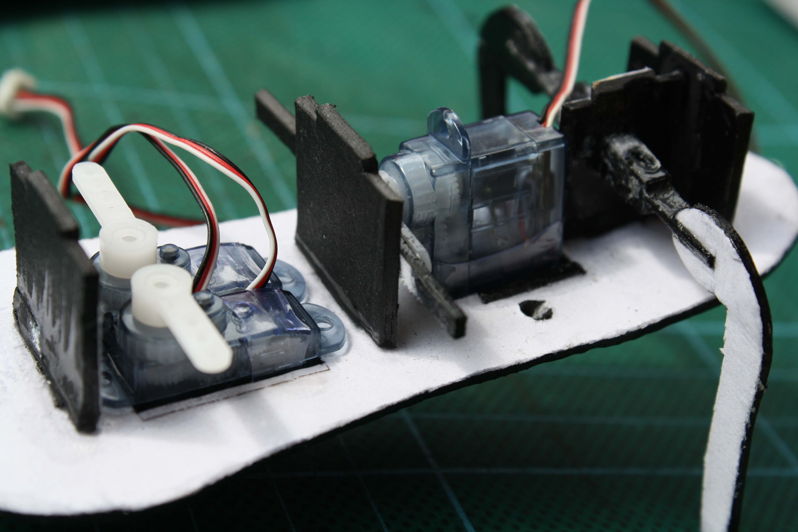
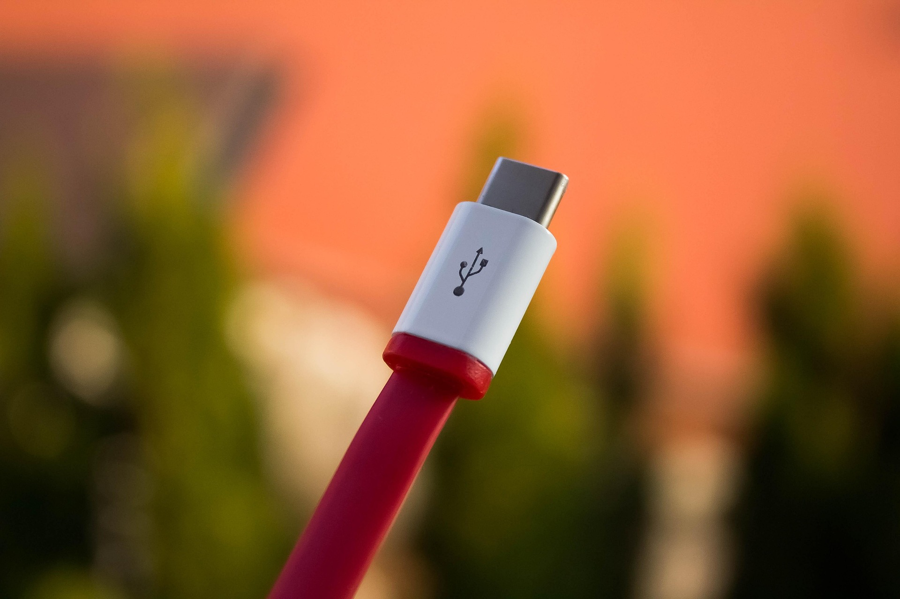
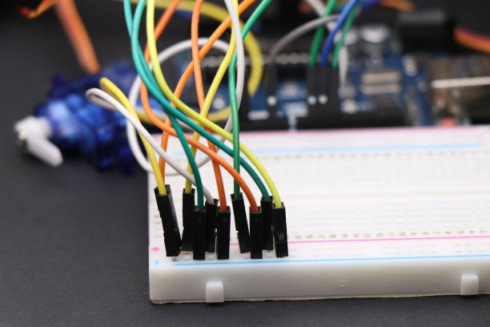

Photos du Prototype
Aperçu du matériel utilisé (Arduino, Capteurs HC-SR04, Servomoteur).




Schémas de Conception
Diagrammes de câblage et architecture du système.

Démonstration en Vidéo
Vidéo montrant l'ouverture automatique et la détection du taux de remplissage.